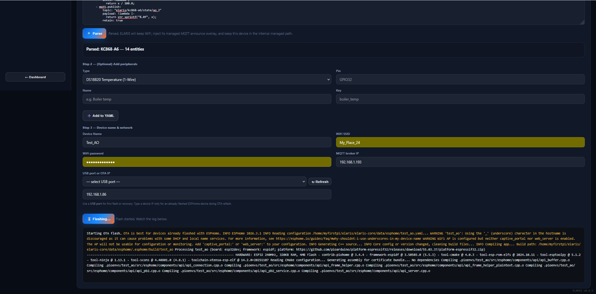
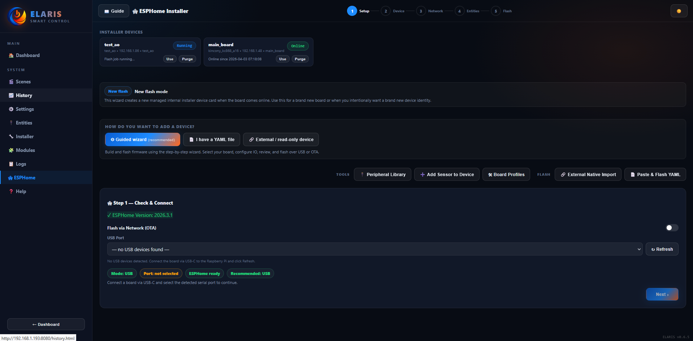

Board selection & config
Pick transport (USB/OTA), name your device, choose a board profile. The wizard validates pin conflicts before compilation.
ELARIS includes an ESPHome installer with board profiles, YAML generation, compile/flash flow, and OTA peripheral injection. No external tools needed.


Add sensors to existing devices without rebuilding the full YAML. The platform reads the existing YAML, injects the new peripheral at the right position, validates pin conflicts, and pushes OTA. Supports 16+ types including I2C (BME280, INA219, CCS811) and UART/RS485 (MH-Z19, PZEM-004T).
After a successful OTA update, the device publishes its config to MQTT. New peripherals from the config land in Pending IO automatically — ready for approval, naming and module mapping.
Pin conflict detection, strapping pin warnings, reserved pin rules. Each board profile defines its own pinRules (reserved, inputOnly, noPullup, flashPins, strapping). The validator catches mistakes before they reach the device.
Devices can be marked as "managed" with a custom MQTT topic root. The YAML importer automatically generates the MQTT overlay (discovery, state publishing, command routing). Native ESPHome topics are filtered to prevent ghost entries.
Each board profile is a JSON file in src/esphome/catalog_profiles/ that defines pinouts, I2C buses, PCF8574 mappings, entity defaults and supported peripherals. Profiles are auto-seeded into the database on startup.
ESP32-S3, 16CH relay, 16DI, 4AI, Ethernet W5500, RS485. PCF8575 I2C expanders. Removable relay terminals.
ESP32-S3, 24CH relay, 24DI, Ethernet W5500. PCF8575 I2C expanders. Industrial-grade board for large installations.
8CH and 32CH variants. Same profile system, different capacity. All support USB flash and OTA updates.
ESP32-S3, 6CH relay, 6DI, 2AO (0-10V via DAC), RS485, RS232. PCF8574 I2C expanders. DS3231 RTC.
Battery-powered and large I/O variants. Profile-driven configuration with the same installer flow.
No profile? Go generic. The wizard validates real pin input intelligently and generates clean YAML for any ESP32 board.
ELARIS already handles RS485/RS232 sensors through ESPHome. Modbus (RTU/TCP) will open the door to VFDs, power meters, PLCs and industrial devices — all landing in the same entity + module workflow.
More board profiles, cleaner peripheral templates, stronger field validation and A6v3 AO (analog output) support.
Modbus RTU/TCP support for broader integration with controllers, meters and industrial-style devices.
Broader hardware bridges that still land in the same entity registry and module mapping workflow.